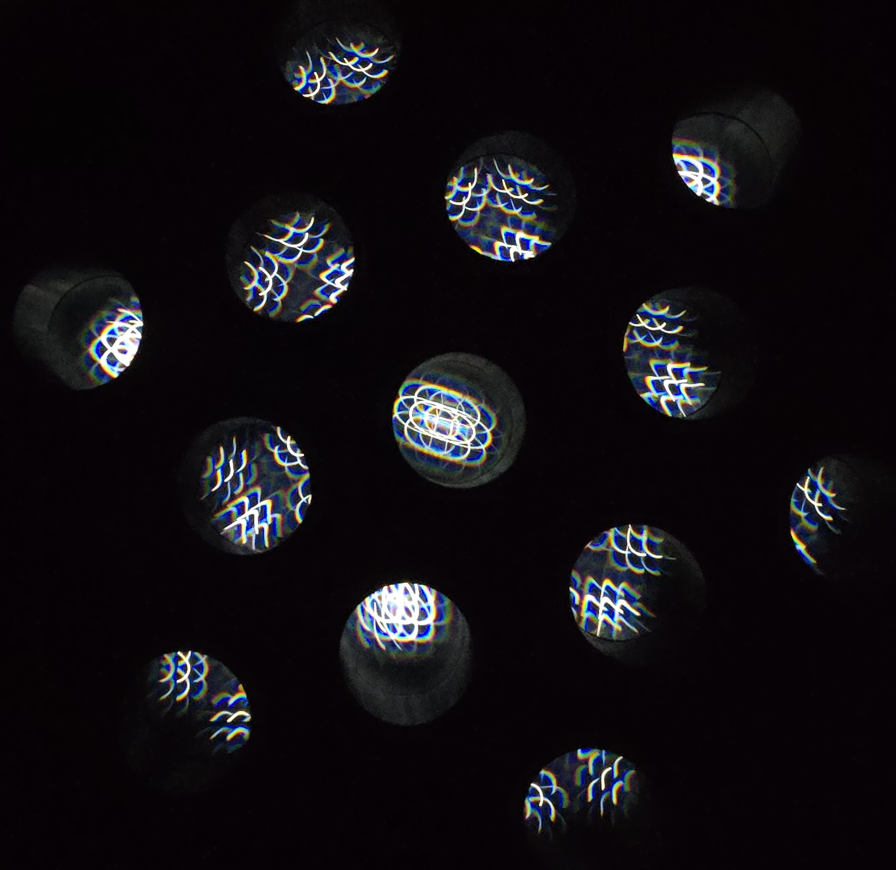

TUBULAR
TUBULAR is a sculptural installation made from a cluster of viewing tubes embedded into a wall. Each tube has a screen on one end and acts as a small chamber for the emitted light to be transformed.
Viewers are invited to peer into the structure. They are greeted by circular digital screens whose light is shifted by optical materials. The screens visualize equations that build crystalline lattice structures.

